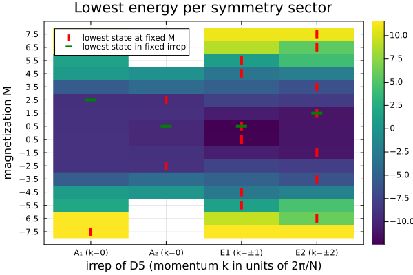

Spatial symmetry sectors
This file demonstrates how to handle spatial symmetries like translations.
Permutations and irreducible representations
Suppose a group $G$ acts on the sites of a system by permutations. Each permutation induces an operator $U(g)$ on the Hilbert space. For an irreducible character $\chi$, the projector onto its symmetry sector is
\[P_\chi = \frac{d_\chi}{|G|} \sum_{g \in G} \chi(g)^* U(g), \qquad d_\chi = \chi(e).\]
To calculate the projector, you need the permutation operator and the value $\chi(g)$ for each $g$. FermionicHilbertSpaces.jl can handle the permutations, but not the characters: obtain them separately with e.g. Oscar.jl. With a list of permutations and their weights for a particular irrep, symmetric_sector(H, Hs, (perms, weights)) constructs a matrix whose columns form a basis for the sector.
Example: a Heisenberg ring
Consider a spin chain with nearest-neighbour coupling and a uniform field:
\[H = J\sum_{k=1}^{N}\mathbf{S}_k\cdot\mathbf{S}_{k+1} - h\sum_{k=1}^{N}S^z_k, \qquad \mathbf{S}_{N+1}=\mathbf{S}_1.\]
We first separate total-magnetization sectors $M=\sum_k S_k^z$, then use the ring's translation and reflection symmetries. These form the dihedral group $D_N$ of order $2N$. Let's consider 5 sites, each with spin 3/2.
using FermionicHilbertSpaces, LinearAlgebrausing FermionicHilbertSpaces: SectorConstraint, SpinStateN = 5J = 1.0h = 0.04@spins S 3 // 2magnetization(s::SpinState) = s.mspace = hilbert_space(S, 1:N, SectorConstraint(sum; maps=magnetization))mags = quantumnumbers(space)H = J * sum(S[k][op] * S[mod1(k + 1, N)][op] for k in 1:N for op in (:x, :y, :z)) - h * sum(S[k][:z] for k in 1:N)Sum with 20 terms:
S[1][:z]*S[2][:z]+S[1][:z]*S[5][:z]+0.5*S[2][:-]*S[3][:+] + ...Oscar supplies the group elements and character table. We convert each element to a permutation vector that FermionicHilbertSpaces.jl can use.
using Oscar: PermGroup, dihedral_group, character_tableG = dihedral_group(PermGroup, 2N)perms = map(Vector, G)chis = character_table(G)weights = [map(Float64 ∘ χ, G) for χ in chis];Label each irrep using its dimension, the character of a one-site rotation, and, for one-dimensional irreps, the character of a reflection. For this even ring, the one-dimensional irreps are A₁, A₂, B₁, and B₂; the remaining irreps Eₖ pair momenta +k and -k.
r = only(g for g in G if Vector(g) == [2:N; 1]) # rotationσ = only(g for g in G if Vector(g) == [1; N:-1:2]) # reflectionfunction irrep_label(χ) d = round(Int, Float64(χ(one(G)))) k = round(Int, N / (2π) * acos(Float64(χ(r)) / d)) d == 2 && return "E$k (k=±$k)" return (k == 0 ? "A" : "B") * (Float64(χ(σ)) > 0 ? "₁" : "₂") * " (k=$k)"endlabels = map(irrep_label, chis)4-element Vector{String}:
"A₁ (k=0)"
"A₂ (k=0)"
"E1 (k=±1)"
"E2 (k=±2)"In each magnetization sector, symmetric_sector constructs a matrix P whose columns form a basis for an irrep's subspace. factors(sec) identifies the tensor factors permuted by the group. We diagonalize $P^\dagger H P$; an absent irrep gets energy Inf.
using KrylovKit, OhMyThreadsfunction sector_energies(M) sec = sector(M, space) HM = real(representation(H, sec)) return map(weights) do w P = symmetric_sector(sec, factors(sec), (perms, w)) size(P, 2) == 0 && return Inf eigsolve(Hermitian(P' * HM * P), 1, :SR; tol=1e-6, ishermitian=true)[1][1] endendenergies = stack(tmap(sector_energies, mags; scheduler=DynamicScheduler()))E0, idx = findmin(energies)(; E0, irrep=labels[idx[1]], M=mags[idx[2]])(E0 = -12.452645032783657, irrep = "E1 (k=±1)", M = 1/2)Let's plot the results. The heatmap shows the lowest energy in each (irrep, $M$) block. Green marks the lowest energy for each irrep; red marks the lowest energy for each magnetization.
using Plotsbest_irrep_per_M = map(argmin, eachcol(energies))best_M_per_irrep = map(argmin, eachrow(energies))p = heatmap(labels, mags, permutedims(energies); xlabel="irrep of D$N (momentum k in units of 2π/N)", ylabel="magnetization M", title="Lowest energy per symmetry sector", c=:viridis, yticks=mags, frame=:box)scatter!(p, labels[best_irrep_per_M], mags; marker=:vline, markersize=6, markerstrokewidth=5, color=:red, label="lowest state at fixed M")scatter!(p, labels, mags[best_M_per_irrep]; marker=:hline, markersize=8, markerstrokewidth=5, color=:green, label="lowest state in fixed irrep")
This page was generated using Literate.jl.